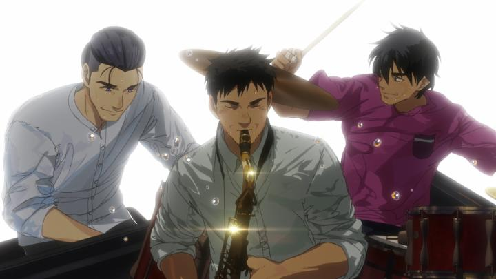
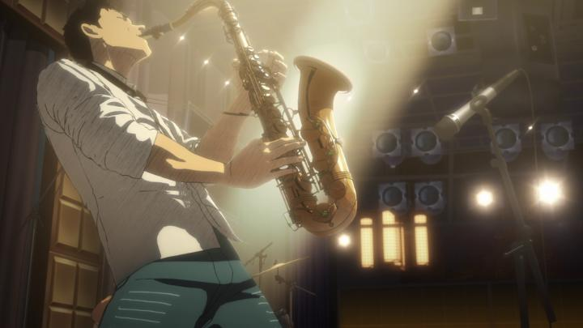

"Blue Giant" was an anime film on my shelf for a while, but I didn't get around to it until a local Japanese Embassy screened it for free as part of a cultural film series. It was towards the tail of a local jazz festival too, which was great timing. It's certainly not the only recent anime film about the creation and performance of music... see "Inu-Oh," "Liz and the Blue Bird," "On-Gaku - Our Sound," and "The Colors Within," among others... and "Blue Giant" is even kinda by the numbers, not straying far from what you'd expect it to be. But it's further proof on how effective the medium of animation can be, especially when paired with Japan's passionately dramatic tendencies. The movie follows three college-age teenagers. The main one, Dai, plays the saxaphone, has a few years of self-taught practice, and a dedicated passion to be part of the jazz scene, moving from his small town to Tokyo to get his start. The second, Yukinori, plays piano, and with over a decade of experience, is coldly confident. The third, Shunji, enters the plot almost by accident - an old friend of Dai's, Shunji had been reluctantly letting Dai sleep on his couch while he explores the new city. Dai and Yukinori agree to team up to start a jazz band, and decide they need a drummer. Dai suggests Shunji as a short-term drummer, and despite having no experience, he quickly catches the bug too, and dedicates himself to practice just to keep up with the others. And so the story goes on, covering roughly 18 months of their growth from amateurs to local successes, sparringly interuptted by future interview clips that foreshadow that Dai, at least, will go on to be a jazz superstar. For the most part, the plot follows an expected formula. There's friction between Dai and Yukinori's opposite personalities, self-doubt about their abilities, struggles to get their first bookings, and so on. Getting those early bookings, and the respect (or lack thereof) from experienced musicians and club owners, felt real and relatable to anyone who's attempted to get started in any competitive arts-based industry. In fact, between all the melodramatic "beauty of jazz" speeches, the movie feels very grounded, going so far as to recreate and heavily feature real performance venues in Tokyo. Another aspect the story features, and gets right, is how the three leads come across many different people, both family and friends, and local strangers and fans of jazz. By the finale performance, many of those same people are in the audience, having followed this band and popping up multiple times to catch their performances. That feeling of seeing a talent early on, and watching them grow over the course of years, is a sense of pride and amazement, and something most artists probably don't think about along their journey. It also speaks to the truth that no artist is an island... it's those early fans and their continued support that allows this band to make connections to book at the best clubs in the city. All that said, as effective as Japanese writers are for describing things with passion... the emotional cues are a little too frequent and thick, to the point of feeling artificial. Especially a late-movie sudden tragic twist that made my audience gasp, but has occurred frequently enough in anime that "truck-kun" is an otaku meme. There's enough emotional character growth here to carry the film without all of that. Also, the movie ends kinda suddenly, especially noticable because of those future-set interviews about Dai. I'd like to have seen more about what becomes of him, but I guess the manga this is based on covers multiple periods of his life, so there'd be a lot to cover.

Production quality is solid. Backgrounds are detailed and realistic. Character designs are fine, sometimes reminiscent of Osamu Tezuka, not quite fitting in with the movie, but still fine. Animation during most of these scenes are a little basic, but also fine. Of course, the question is the many scenes where the characters perform music. Does it look good, and more importantly, does it sound good?The thing about jazz is... even when it's good, it's usually smooth, and not rousing enough to garner applause or a standing ovation. It's the "abstract art" of music, and not everyone is going to get it. Paired with the visuals of the characters passionately playing (and listening) to the act, it almost sells me on it. The music is good. I think. The finale performance did make me want to cheer, but mostly because I saw the journey of growth leading up to it. But it's a curious choice to make a dramatic film about. Of all the genres to be so passionate about, why jazz? I guess if there's anything that would make you a fan of jazz, this is it.Regarding the animation; there seems to be an unwritten rule in anime after 2010 that, for anything set on a performance stage, it must use CGI. And my word, it looks ugly. Not always, but often. More frustrating is that the stage performances switch between full CGI, full 2D, and a hybrid (2D characters with 3D instruments). I'd guess the 3D percentage is 80%? It's that inconsistency that's so distracting, and that they prove that they COULD have made these scenes fully in 2D feels unforgivable. Especially because these scenes are good. Very good. One middle performance and the final performance in particular are full of life and cuts to abstract sensory imagery, like the sax flickering with lightning, or the piano being a blur of black and white charcoal. Some of the best 2D animation I've seen this year is in these scenes. Only to have CGI interupt and spit in its face. To be clear, I'm not saying 3D animation always inherently looks bad, but how it's used here, and how it compares against 2D clips of the same scene, it's a big downgrade, like going from a 4 / 5 to a 2 / 5. As far as I know, there's no English dub available, but the Japanese acting is great. Curiously, the theatre screening's subtitles, and the subtitles on my GKIDS Bluray, were slightly different... why are there two separate English translations out there?Despite some lazy use of CGI (seriously y'all, spend a few extra months and just replace those placeholder models!) and laying the melodrama on a bit thick, "Blue Giant" is a strong drama about the journey of being a musician and artist. And I think I might be a jazz fan now. - "Ani" More reviews can be found at : https://2danicritic.github.io/ Previous review: review_Blue_Drop Next review: review_Blue_Thermal